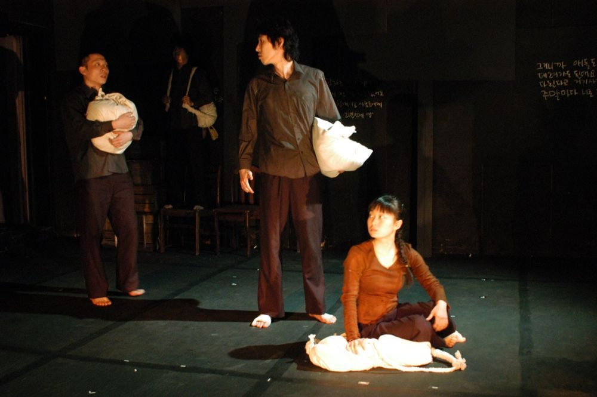

동틀 무렵 강가, 아버지와 아들과 커다란 짐 가방들. 더 나은 삶을 위해 숲과 가족을 떠나 강을 건넌 아이는 낯선 땅에서 부당한 대우와 실직을 겪고, 아버지가 알려 준 주소를 들고 무하마드가 일하는 공장을 찾아간다. 100여 년 전 멕시코 에네켄 농장으로 떠난 조선인부터 오늘의 이주노동자까지, 떠나는 사람들의 발걸음을 따라가며 배웅하고 마중하는 이야기.
2007.4.5–22 / 정보소극장
2007.9.5 / 의정부 예술의전당 소극장
2007.9.7–9 / 씨어터 디아더
2007.9–10 / 전국 12개 지역 순회 - 신나는 예술여행
작: 이화진
연출: 윤한솔
영상·설치: 김상돈
조명: 최보윤
음악: 김용
의상: 이유선
소품: 김미경
조연출: 박경찬
기획: 박지현
드라마투르기: 박상현
제작감독: 김학수
출연: 강효정, 김문호, 김선덕, 김태희, 류경인, 박범규, 신재환, 이동영, 이태권
지원: 한국문화예술위원회 신진예술가 지원
이전: 〈자객열전〉 | 다음: 〈그림 같은 시절〉
아카이브로 돌아가기 | 아무 작품이나
발행일 2026.11.10